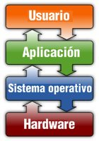

SI02.- Software de un sistema informático.
2.1.- Concepto y objetivos de los sistemas operativos.

Los principales objetivos de los sistemas operativos son:
- Abstraer al usuario de la complejidad del hardware: El sistema operativo hace que el ordenador sea más fácil de utilizar.
- Eficiencia: Permite que los recursos del ordenador se utilicen de la forma más eficiente posible. Por ejemplo, se deben optimizar los accesos a disco para acelerar las operaciones de entrada y salida.
- Permitir la ejecución de programas: Cuando un usuario quiere ejecutar un programa, el sistema operativo realiza todas las tareas necesarias para ello, tales como cargar las instrucciones y datos del programa en memoria, iniciar dispositivos de entrada/salida y preparar otros recursos.
- Acceder a los dispositivos entrada/salida: El sistema operativo suministra una interfaz homogénea para los dispositivos de entrada/salida para que el usuario pueda utilizar de forma más sencilla los mismos.
- Proporcionar una estructura y conjunto de operaciones para el sistema de archivos.
- Controlar el acceso al sistema y los recursos: en el caso de sistemas compartidos, proporcionando protección a los recursos y los datos frente a usuarios no autorizados.
- Detección y respuesta ante errores: El sistema operativo debe prever todas las posibles situaciones críticas y resolverlas, si es que se producen.
- Capacidad de adaptación: Un sistema operativo debe ser construido de manera que pueda evolucionar a la vez que surgen actualizaciones hardware y software.
- Gestionar las comunicaciones en red: El sistema operativo debe permitir al usuario manejar con facilidad todo lo referente a la instalación y uso de las redes de ordenadores.
- Permitir a los usuarios compartir recursos y datos: Este aspecto está muy relacionado con el anterior y daría al sistema operativo el papel de gestor de los recursos de una red.
¿Sabes cómo han ido cambiando los sistemas operativos desde sus inicios? Resulta interesante conocer la evolución histórica que han sufrido los sistemas operativos para comprender mejor las características que explicaremos más adelante. Lee este interesante documento:
Autoevaluación
Para saber más
¿Quieres conocer cómo se crearon dos de las empresas más importantes de informática, Apple Computer y Microsoft? Visita este interesante enlace: